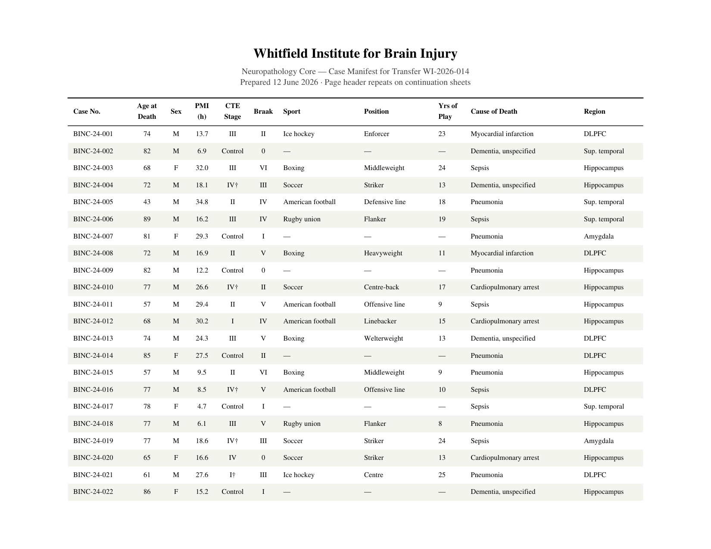
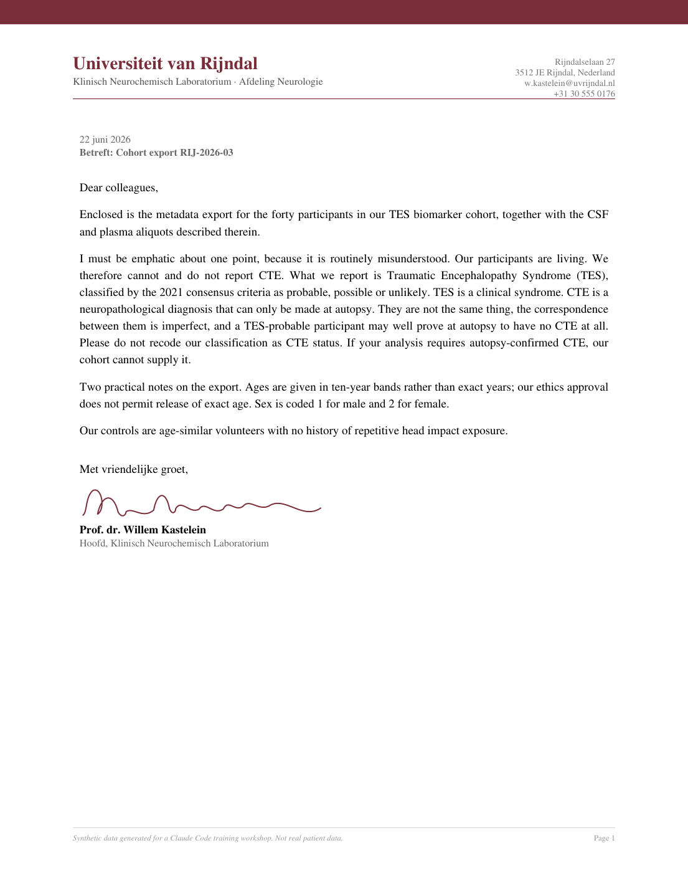

Data cleanup
and visualization
Session 3 · Four cohorts that don't agree on anything
Lauren Fields & Chris
Claude Code Workshop · Day 1 · 10:30–12:00
WASHINGTON
Projects don't fail at the instrument.
They fail at the metadata.
The sample sheet. The case list. The spreadsheet a collaborator emailed you in March.
Why this is harder than it looks
- Metadata is written by people, for themselves Every lab's choices make sense — inside that lab.
- Two labs both say “age.” They mean different things. Age at death? At draw? Binned into decades for privacy?
- The format is never the format you want A PDF. A pivoted CSV. A workbook with four tabs and a colour code.
- And what matters most is often not in the file at all
The scenario
Three labs. One disease.
No two fields alike.
You prepare clinical samples. Three independent CTE groups have each shipped you samples and metadata, and each wants to know how their cohort compares.
Who sent you what
- Whitfield Institute — neuropathology Post-mortem brain. A typeset PDF case manifest.
- Universiteit van Rijndal — clinical biomarkers A living cohort. CSF and plasma. A CSV export.
- Cascade Athletic Health Center — sports medicine Mixed sample types. An Excel workbook.
Nobody coordinated. Why would they? They don't work with each other — they work with you.
Lab 1 sent a beautiful PDF

Publication quality. Footnoted. Perfectly typeset. And you cannot compute a single thing with it.
Lab 2 sent a CSV. Sort of.
The table is on its side — one column per patient. Excel will not save you here.
Lab 3 sent a workbook
| Cascade Athletic Health Center — Brain Tissue Inventory (frozen, -80C) | |||||||
| Donor ID | CTE status | Age | Sex | Yrs contact sport | PMI (min) | Region | Aliquots |
|---|---|---|---|---|---|---|---|
| SM-001 | CTE- | 35 | M | 18 | 2566 | DLPFC | 1 |
| SM-002 | CTE- | 28 | M | 11 | 263 | DLPFC | 4 |
| SM-003 | CTE- | 22 | M | 10 | 1275 | Sup. temporal | 2 |
| SM-004 | CTE- | 59 | M | 3 | 461 | Amygdala | 1 |
Four tabs. The header isn't on row 1. And that amber row means something — but the file never says what.
And a fourth cohort, free
- Kumar et al., Cell 2026 — tauopathy-associated dementias doi:10.1016/j.cell.2025.12.036 · Supplementary Table S1
- Case-level demographics: one row per brain donor 24 CTE, 24 controls, plus AD, PSP, CBD, PiD, DLB.
- You don't have this file. Claude goes and gets it.
Then do the thing that matters: ask it what it actually downloaded. Publishers don't always hand a robot the spreadsheet it asked for — and Claude will report success either way.
Five minutes · in pairs · no laptops
How would you merge these?
Write the steps down. What has to be decided? What would you have to look up,
guess, or ask someone about?
In a minute you'll read a plan Claude wrote. The only way to judge a plan is to already have one.
Now hand it over — in planning mode
- Shift+Tab: Claude proposes, and waits, instead of charging ahead
- Read its plan against yours. Where they differ, one of you is wrong
- One workbook: a sheet per cohort, plus a combined sheet
- Insist on a decisions log Every mapping, conversion, guess and dropped field gets a row: what, and why.
Then a code-review agent reads it cold. Then commit and push to your ClaudeLab.
Don't ask for plots. Ask to be asked.
“I want to visualize these cohorts. Ask me the questions you need answered before you make a single plot.”
- Answer honestly — including “I don't know yet”
- Then around ten plots. Look at every one.
- Some will be wrong. Say so. Ask for another.
Favourites → one HTML report → push it → your partner pulls it down and opens it.
Before you believe any of it
Three things
nobody told you
One. Did anyone get a strange PMI?
(every other case: 4.5–38 h)
BINC-24-031 is printed in white ink on white paper. Go back and look for it — there is nothing there. It wrecks every PMI plot, and no human reading that PDF would ever find it.
Claude sees what you don't.
Two. Every shipment came with a letter



Nobody read them. They contradict the spreadsheets in three specific, consequential ways.
Claude will happily map
TES → CTE.
They are not the same thing. TES is a clinical syndrome, in the living. CTE is a neuropathological diagnosis, made at autopsy.
Prof. Kastelein's letter says so, at length. It was in the folder the whole time.
Claude misses what you know — if you never tell it.
Three. Now look at the published cohort
A real dataset. A real journal. CTE vs control here is also a sex contrast, a site contrast, and a PMI contrast.
Data does not carry
its own context.
Somebody has to ask. That somebody is you.
And you now have a tool that will ask twelve questions the moment you tell it to — and that will tell you, confidently, that it succeeded.
What you take with you
- A merge you can defend — because the decisions log says what you decided
- The reflex to check what Claude actually did Especially when it tells you it succeeded.
- A checklist for the next collaborator who ships you metadata The questions you now wish you'd asked. Keep it in your ClaudeLab.
Session 3
Questions?
lfields2@uw.edu